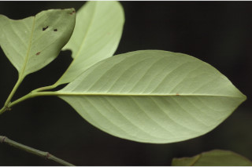
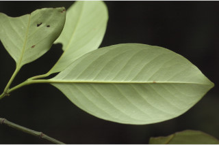
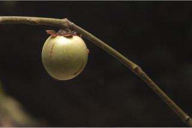
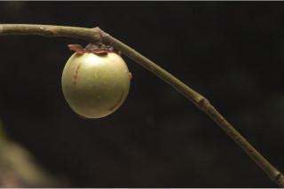

Trees up to 12 m tall.
12 ಮೀ ಎತ್ತರದವರೆಗೆ ಬೆಳೆಯುವ ಮರಗಳು.
12 മീറ്റര് വരെ ഉയരത്തില് വളരുന്ന മരങ്ങള്.
மரம் 12 மீ. உயரம் வரை வளரக்கூடியது.
Bark smooth, dark brown; blaze white.
ತೊಗಟೆ ನಯವಾಗಿದ್ದು ಕಡು ಕಂದು ಬಣ್ಣ ಹೊಂದಿರುತ್ತದೆ; ಕಚ್ಚು ಮಾಡಿದ ಜಾಗ ಶ್ವೇತ ಬಣ್ಣದಲ್ಲಿರುತ್ತದೆ.
കടും തവിട്ടുനിറത്തിലുള്ളതും, മിനുസമാര്ന്നതുമായ പുറംതൊലി; വെട്ടുപാടിന് വെളുപ്പ് നിറം.
மரத்தின் பட்டை வழுவழுப்பானது, கரும்ப்ரவுன் நிறமானது; உள்பட்டை வெள்ளை நிறமானது.
Branchlets angular, glabrous.
ಕಿರುಕೊಂಬೆಗಳು ಕೋನಯುಕ್ತವಾಗಿದ್ದು ರೋಮರಹಿತ- ವಾಗಿರುತ್ತವೆ.
അരോമിലവും, കോണോടുകൂടിയതുമായ ഉപശാഖകള്.
சிறிய நுனிக்கிளைகள் குறுக்குவெட்டுத் தோற்றத்தில் கோணங்களுடையது, உரோமங்களற்றது.
Latex bright yellow, profuse.
ಸಸ್ಯಕ್ಷೀರ ಹೇರಳವಾಗಿದ್ದು, ಹಳದಿ ಬಣ್ಣ ಹೊಂದಿರುತ್ತದೆ .
തിളങ്ങുന്ന മഞ്ഞനിറത്തിലുള്ള സമൃദ്ധമായ സ്രവം.
சாறு நல்ல மஞ்சள் நிறமானது, அதிகளவில் உண்டாகின்றன.
Leaves simple, opposite, decussate; petiole 0.6-1.5 cm long, canaliculate, sheathing at base, glabrous; lamina 6.5-15 x 3.5-8 cm, usually elliptic, sometimes narrow obovate, apex acute to acuminate, base attenuate; coriaceous or subcoriaceous, glabrous; secondary_nerves 6-8 pairs; tertiary_nerves obscure.
ಎಲೆಗಳು ಸರಳವಾಗಿದ್ದು,ಕತ್ತರಿಯಾಕಾರದ ಅಭಿಮುಖ ಜೋಡನಾ ವ್ಯವಸ್ಥೆಯಲ್ಲಿರುತ್ತವೆ;ಎಲೆತೊಟ್ಟುಗಳು 0.6 ರಿಂದ 1.5 ಸೆಂ.ಮೀ ಉದ್ದವಾಗಿದ್ದು ಕಾಲುವೆಗೆರೆ ಸಮೇತವಿರುತ್ತವೆ ಹಾಗೂ ಬುಡಭಾಗದಲ್ಲಿ ಒರೆಯನ್ನುಹೊಂದಿರುತ್ತವೆ ಮತ್ತು ರೋಮರಹಿತವಾಗಿರುತ್ತವೆ; ಎಲೆಪತ್ರಗಳು 6.5 -15 X 3.5 - 8 ಸೆಂ.ಮೀ ಗಾತ್ರ ಹೊಂದಿದ್ದು ಸಾಮಾನ್ಯವಾಗಿ ಅಂಡವೃತ್ತಾಕೃತಿಯಲ್ಲಿ ಅಥವಾ ಕೆಲವು ವೇಳೆ ಸಂಕುಚಿತಗೊಂಡ ಬುಗುರಿಯಾಕಾರ ಹೊಂದಿದ್ದು, ಚೂಪಾದುದರಿಂದ ಹಿಡಿದು ಕೃಮೇಣ ಚೂಪಾಗುವ ಮಾದರಿಯ ತುದಿ ಹಾಗೂ ಒಳಬಾಗಿದ ತಳವುಳ್ಳ ಮಾದರಿಯಬುಡವನ್ನು ಹೊಂದಿರುತ್ತವೆ, ಎಲೆಗಳು ತೊಗಲು ಅಥವಾ ಉಪ ತೊಗಲನ್ನೋಲುವ ಮಾದರಿಯಲ್ಲಿದ್ದು ರೋಮರಹಿತವಾಗಿರುತ್ತವೆ; ಎರಡನೇ ದರ್ಜೆಯ ನಾಳಗಳು 6 ರಿಂದ 8 ಜೋಡಿಗಳಿದ್ದು ಮೂರನೇ ದರ್ಜೆಯ ನಾಳಗಳು ಅಸ್ಪಷ್ಟ- ವಾಗಿರುತ್ತವೆ..
സമ്മുഖ, ഡെക്കുസേറ്റ് ക്രമത്തിലുള്ള ലഘുപത്രങ്ങള്; ഇലഞെട്ടിന് 0.6 സെ.മി മുതല് 1.5 സെ.മി വരെ നീളം, ചാലോട് കൂടിയതും കീഴറ്റം ഉറയോടുകൂടിയതുമാണ്, അരോമിലം; പത്രഫലകത്തിന് 6.5 സെ.മി മുതല് 15 സെ.മി വരെ നീളവും 3.5 സെ.മി മുതല് 8 സെ.മി വരെ വീതിയും, സാധാരണയായി ദീര്ഘവൃത്താകാരം, ചിലപ്പോള് വീതി കുറഞ്ഞ അപഅണ്ഡാകാരം, പത്രാഗ്രം നിശിതം മുതല് ചെറുവാലോട് കൂടിയതോ ആണ്, പത്ര3ധാരം സാവധാനം നേര്ത്തവസാനിക്കുന്ന വിധത്തിലാണ്, ചര്മ്മിലമോ ഉപചര്മ്മിലമോ ആയ പ്രകൃതം, അരോമിലം; 6 മുതല് 8 വരെ ജോഡി ദ്വിതീയ ഞരമ്പുകള്; ത്രിതീയ ഞരമ്പുകള് അപ്രസക്തമാണ്.
இலைகள் தனித்தவை, எதிரடுக்கமானவை, குறுக்குமறுக்கமானவை; இலைக்காம்பு 0.6-1.5 செ.மீ., இலைக்காம்பு குறுக்குவெட்டுத் தோற்றத்தில் கேனாலிகுலேட், தளத்தில் உறை போன்றது, உரோமங்களற்றது; இலை அலகு 6.5-15 X 3.5-8 செ.மீ., பொதுவாக நீள்வட்டம் வடிவம், சிலசமயங்களில் குறுகிய தலைகீழ் முட்டை வடிவானது, அலகின் நுனி கூரியது முதல் அதிக்கூரியது, அலகின் தளம் அட்டனுவேட்; கோரியேசியஸ், கீழ்பரப்பு உரோமங்களற்றது; இரண்டாம் நிலை நரம்புகள் 6-8 ஜோடிகள்; மூன்றாம் நிலை நரம்புகள் அற்றவை.
Flowers dioecious; male flowers in fascicles, axillary; female flowers larger than male, solitary, axillary.
ಗಂಡು ಮತ್ತು ಹೆಣ್ಣು ಹೂಗಳು ಪ್ರತ್ಯೇಕ ಸಸ್ಯಗಳಲ್ಲಿರುತ್ತವೆ; ಗಂಡು ಹೂಗಳು ಅಕ್ಷಾಕಂಕುಳಿನಲ್ಲಿರುವ ಗುಚ್ಛಗಳಲ್ಲಿರುತ್ತವೆ.; ಹೆಣ್ಣು ಹೂಗಳು ಗಂಡುಹೂಗಳಿಗಿಂತ ದೊಡ್ಡಗಾತ್ರದಲ್ಲಿದ್ದು ಅಕ್ಷಾಕಂಕುಳಿನಲ್ಲಿ ಒಂಟಿಯಾಗಿರುತ್ತವೆ.
ആണ്-പെണ് പൂക്കള് വെവ്വേറെ ചെടികളിലുാകുന്നു; പെണ് പൂക്കള് കക്ഷീയ, കൂട്ടങ്ങളില് ഉാകുന്നു; പെണ് പൂക്കള് ആണ് പൂക്കളേക്കാള് വലുതും, കക്ഷങ്ങളില് ഒറ്റക്കുാകുന്നതുമാണ്.
மலர்கள் ஒர்பாலானவை, ஈரகம் கொண்டவை; ஆண்மலர்கள் தொகுப்பாக இலைக்கோணங்களில் காணப்படுபவை; பெண்மலர்கள் ஆண்மலர்களை விட பெரியவை, தனித்தவை, இலைக்கோணங்களில் காணப்படுபவை.
Berry, 3 cm across, 4-seeded.
ಬೆರ್ರಿ ಗಳು 3ಸೆಂ.ಮೀ ಅಗಲವಿದ್ದು ನಾಲ್ಕು ಬೀಜಗಳನ್ನು ಒಳಗೊಂಡಿರುತ್ತವೆ.
കായ 4 വിത്തുകളുള്ളതും 3 സെ.മി കുറുകേയുള്ളതുമായ ബെറിയാണ്.
முழுச்சதைகனி (பெர்ரி), 3 செ.மீ. குறுக்களவுடையது, 4-விதைகளையுடையது.


 

 
